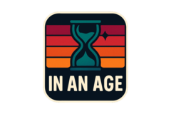
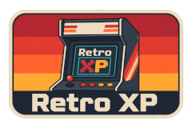
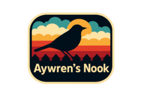

Azuriel argues BioWare’s closure wasn’t just EA cruelty, pointing to repeated mismanagement, crunch, and Frostbite as the longer collapse.
Cind Swanson traces Epic’s trend-chasing history into 7th Legion, tying the RTS detour to the company’s long-running bad vibes. Wilhelm rounds up EVE Online’s Fractured Skies, CSM21 voting, and assorted New Eden odds and ends with cautious, slightly weary commentary.
Wilhelm rounds up EVE Online’s Fractured Skies, CSM21 voting, and assorted New Eden odds and ends with cautious, slightly weary commentary.
 Jimmy digs into Ion Storm through Stevie Case’s rise from Quake competitor to a key figure in that late-90s gaming orbit.
Jimmy digs into Ion Storm through Stevie Case’s rise from Quake competitor to a key figure in that late-90s gaming orbit.

Aywren mourns BioWare, winces at a major PHP security mess disrupting sites like FFXIV, and ends on a cautiously hopeful personal note. Tim Bray wrestles with using GenAI on Quamina, balancing ethical unease against the very real temptation to offload tricky data-format work.
Tim Bray wrestles with using GenAI on Quamina, balancing ethical unease against the very real temptation to offload tricky data-format work.